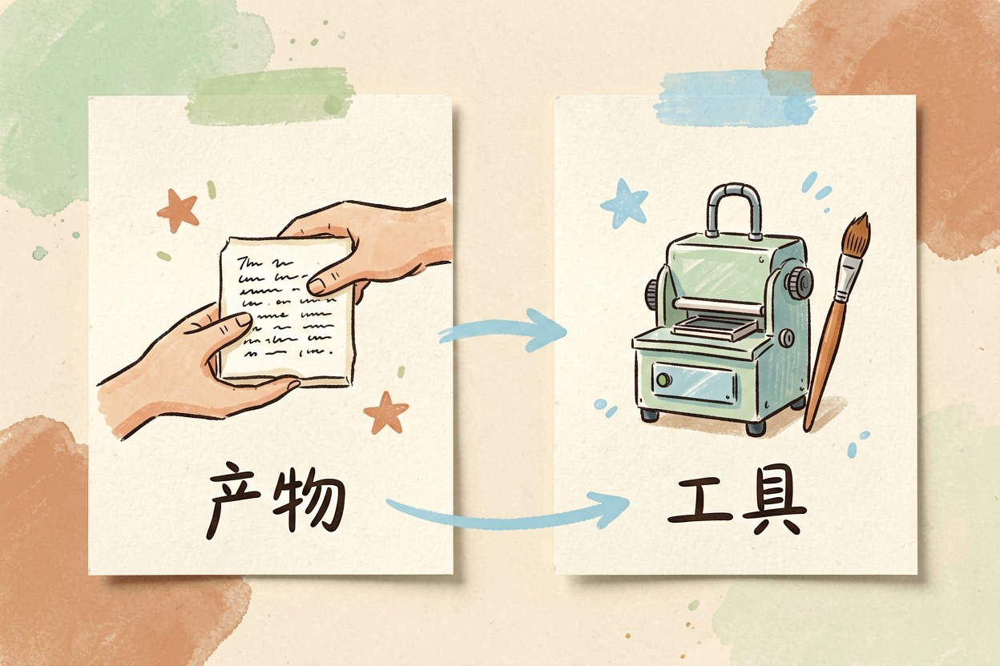
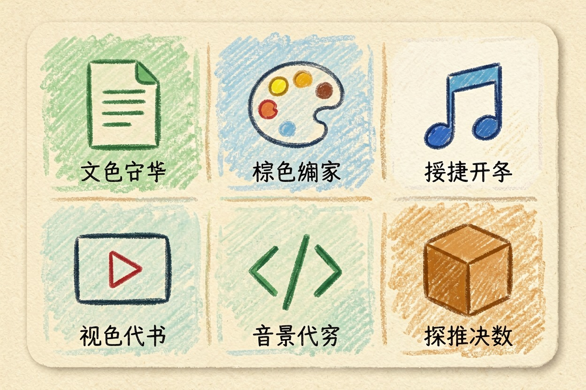
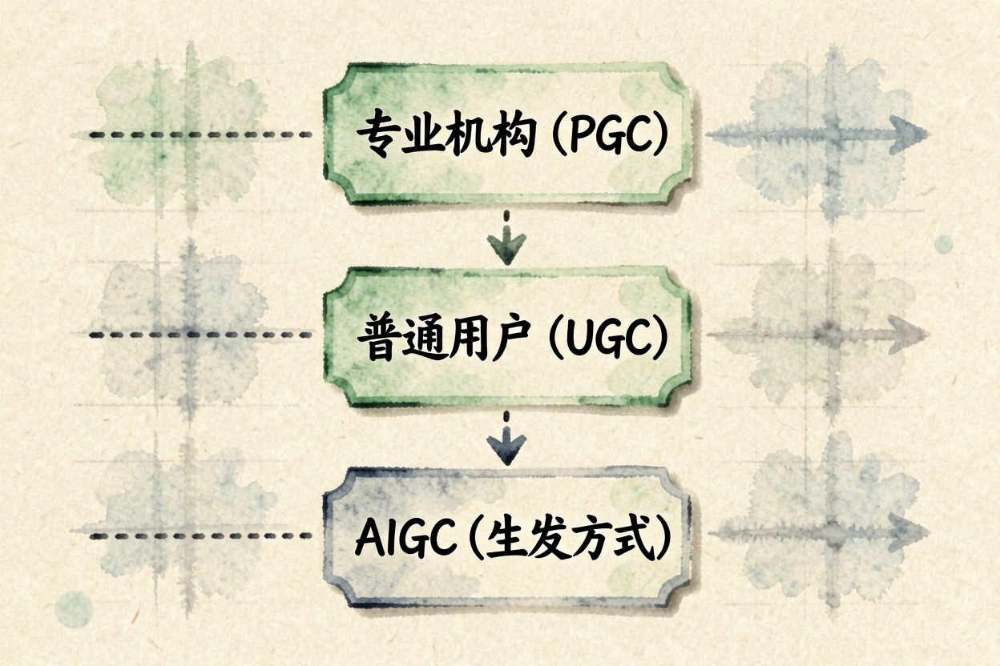
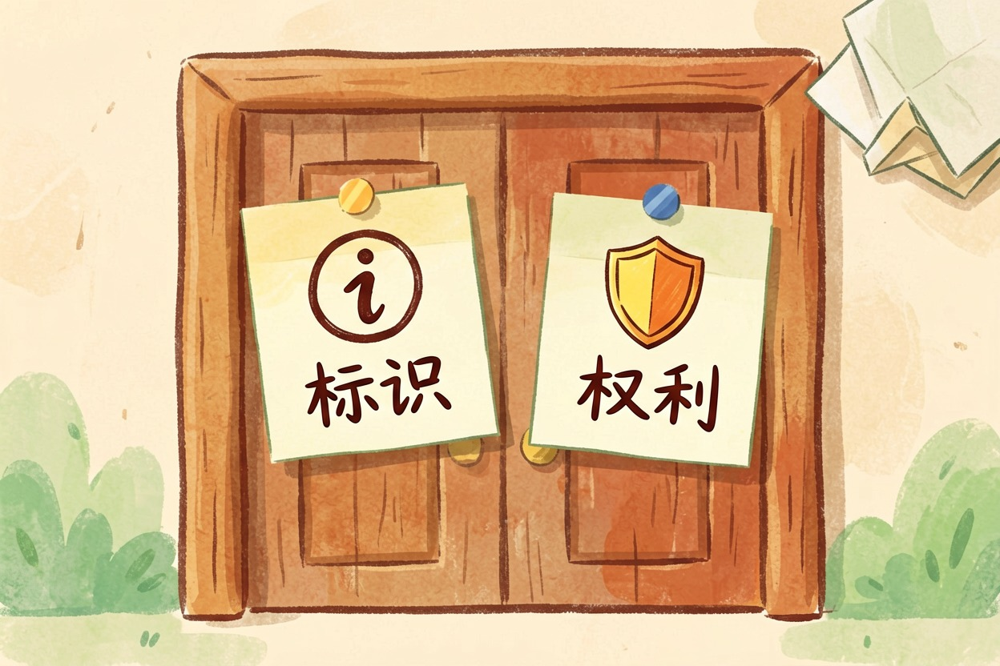
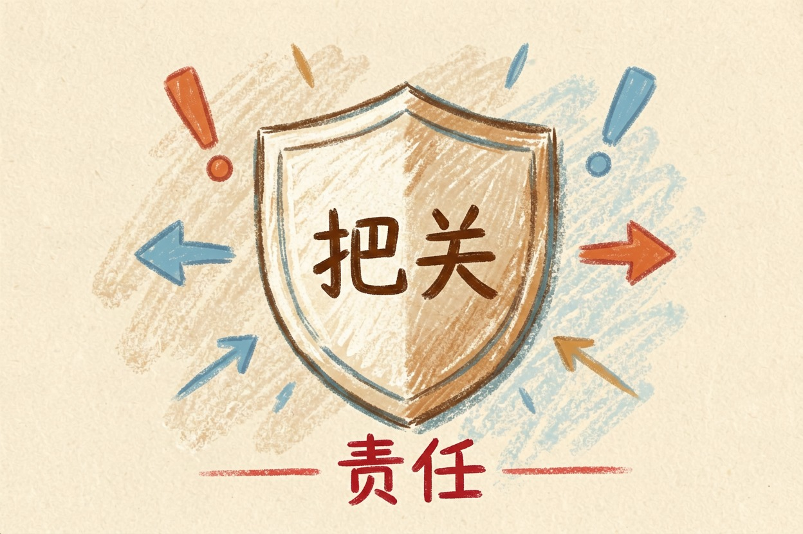
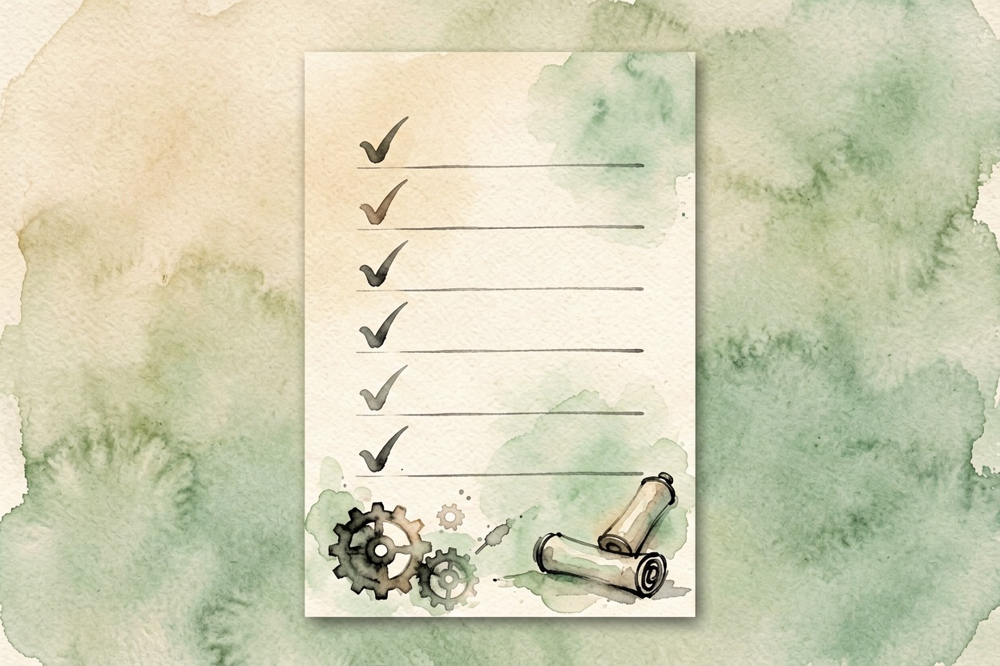

什么是 AIGC？和生成式 AI 是同一回事吗 — Learntide
一个说的是产出的东西，一个说的是产出它的手艺。日常混着用没事，写合规文件时会出岔子。
什么是 AIGC：先分清产物和工具

什么是 AIGC？它是 AI 生成内容的简称，指的是机器产出的那些东西：一段文案、一张插画、一条配音、一段视频。落点在「内容」这两个字上。
生成式 AI 指的则是能造出这些内容的技术和产品。一个说产物，一个说手艺。aigc和生成式ai的区别，核心就在这里。
还有个常被一起提的词是大模型。它是生成式 AI 里最主流的一类底座，但不等于全部。图像生成和语音合成走的是别的技术路线。
日常聊天混着用问题不大。可一旦写进合同、标书、平台规则或者内部规范，指代不清就会扯皮。到底是限制这类内容，还是限制这类工具，两回事。
AIGC 包括哪些内容

aigc是什么意思，看它覆盖的门类最直观。
文字：文案、脚本、摘要、翻译、邮件初稿
图像：插画、海报底图、产品图、头像
音频：配音、音效、背景音乐、有声书
视频：短片、数字人口播、动态封面
代码：函数片段、脚本、单元测试
三维：模型白模、贴图、场景草稿范围还在往外扩。判断标准很简单：主要内容由模型生成，且能直接拿来用或改用，就算在里面。
需要留意的是「辅助」和「生成」之间没有硬边界。你让工具改了三个错别字，通常不算；整段由它写完你只调语序，那就算。
另外别把 AIGC 和自动化混为一谈。批量替换文字、按模板套图，这些是程序在执行既定规则，产出内容里没有模型的生成成分。
和 PGC、UGC 摆在一起看

早年的分法是 PGC 和 UGC，一个是专业机构做的，一个是普通用户发的。分类依据是「谁做的」。
AIGC 插进来之后，分类依据变成了「怎么做的」。同一条视频，可以既是 UGC，也是 AIGC——用户发的，但画面是模型生成的。
对个人创作者来说，这个区分有实际意义。平台的流量政策通常按 UGC 还是 PGC 来分，标识和审核规则才看内容是不是模型生成的。两套规则各管一摊。
所以这三个词不在同一个维度上，不能并列比较。看到有人拿它们排座次，基本可以判定是没理清概念。
发布之前要过的两道关

第一道是标识。国内对生成内容的标识有明确要求，显式标注和文件内的隐式标识都涉及。发布到公开平台前，先看清平台的具体规则怎么落。
第二道是权利。素材来源是否干净、模型输出的商用范围、有没有蹭到他人肖像和商标，这些都要过一遍。免费能用不等于能商用。
还有一处容易忽略：留痕。谁用什么工具、在什么时间生成了哪一版，最好留个记录。真被追问来源时，能拿出过程比只说一句自己做的有用。
两道关都不复杂，麻烦的是漏掉。做成清单，发一次勾一次。
别把 AIGC 当成免责牌

有人觉得「这是 AI 生成的」就能撇清责任。实际相反：你是发布者，内容出问题，找的是你。模型不承担名誉、侵权和虚假宣传的后果。
也别走另一个极端，一听是机器生成就全盘否定。工具用在草稿、批量素材和重复劳动上，效率提升是实打实的。
分寸在于：产出可以交给机器，把关必须自己来。搞清楚什么是aigc，第一步就是认下这份把关责任。

本文信息核对于 2026-08-08。AI 产品的价格、免费额度与功能变动频繁，实际以各工具官网当前说明为准。